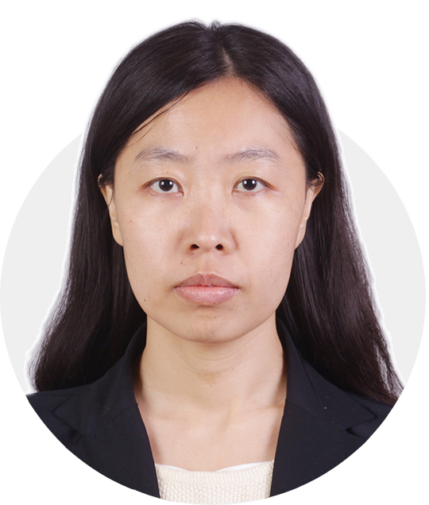

Research Lab
Cooperator

|
Prof. Falai Chen Professor in USTC Email: chenfl@ustc.edu.cn |

|
Prof. Ligang Liu Professor in USTC Email: lgliu@ustc.edu.cn |
| Prof. Jun Wu Associate Professor in TU Delft Email: j.wu-1@tudelft.nl |

|
Prof. Xiao-Ming Fu Associate Professor in USTC Email: fuxm@ustc.edu.cn |
|

|
Prof. Wei-Hsin Liao Chair Professor in CUHK Email: whliao@cuhk.edu.hk |

|
Prof. Weiming Wang Associate Professor in DLUT Email: wwmdlut@gmail.com |
| Prof. Wenpeng Xu Associate Professor in HNPU Email: wpxu08@gmail.com |
 | Prof. Hongmei Kang Associate Professor in SUDA Email: khm@mail.ustc.edu.cn |
|